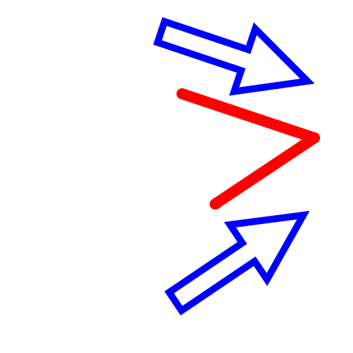
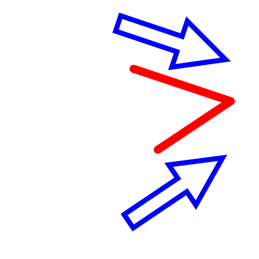
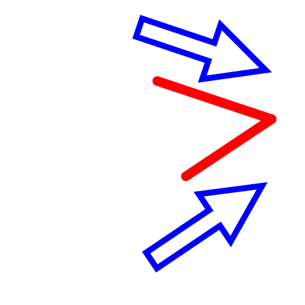
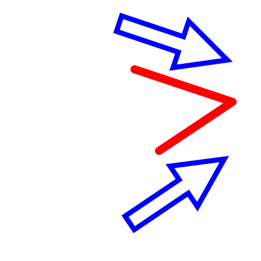
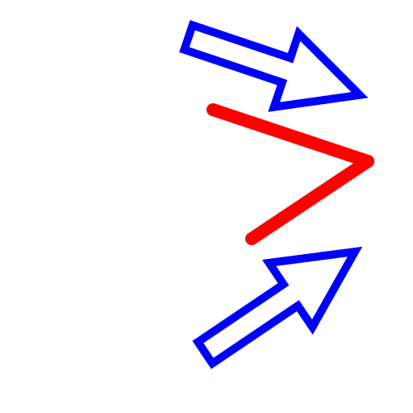

B 2線トリム
ツールバー/アイコン:

メニュー:
M 修正 - B 2線トリム
ショートカット:
T, M
コマンド:
trim2 | extend2 | tm
説明:
それらの交点への2行のライン、弧あるいは楕円エンティティをトリム／伸長します。
手順:
トリムのために最初のエンティティを選んでください。
トリムのために第2のエンティティを選んでください。
ツールを終了するために2度右クリックするか、あるいは2度エスケープを押します。
 


